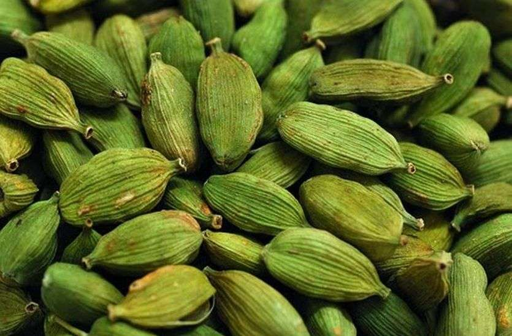

इलायची विषयी माहिती

प्रस्तावना
कोकणात जवळ-जवळ सर्व प्रकारची मसाल्याची पिके होतात. त्यापैकी वेलदोडा हे एक महत्वाचे पीक असून त्यास मसाला
पिकांची राणी म्हणून संबोधण्यात येते.
असे असले तरी वेलदोडयाच्या लागवडीपासून जास्तीत जास्त उत्पादन
मिळविण्यासाठी त्याची शास्त्रोक्त व सुधारीत पध्दतीने लागवड करणे महत्वाचे आहे.
हवामान व जमीन
ज्या भागात किमान तपमान 10 अंश सें.ग्रे. व कमाल तपमान 35 अंश से.ग्रे. आहे. अशा भागात वेलदोडा होवू शकतो. तापमान
10 अंश सें.ग्रे.च्या खाली जात असेल त्याठिकाणी वेलदोडयाची वाढ खुंटते.
सम प्रमाणात पडणारा पाऊस 150 ते 300 सेमी.
वेलदोडयातस उपयुक्त आहे. कोकणपटटीत पावसाळयानंतर नियमितपणे पाणी देणे आवश्यक आहे. समुद्रसपाटी पासून 750 मी ते
1500 मी. उंचीपर्यंत वेलदोडयाची लागवड होवू शकते. सर्वात अनुकूल उंची 1300 मी. समुद्रसपाटीपासून कोकणात विशेषतः
सिंधुदूर्ग जिल्ळयात सावंतवाडी तालुक्यातील आरोस या गावी अगदी समुद्रसपाटीवर नारळ सुपारीच्या बागेत श्री. रघुनाथ
विठठल नाईक या शेतक-याने वेलचीची लागवड फायदेशिरपणे करुन दाखविली आहे. या झाडास उष्ण हवामान व जोरदार वारा सहन होत
नाही.
उष्ण हवामानातुळे झाडे करपतात व वा-यामुळे झाडे मोडतात. त्यामुळे नारळ – सुपारीच्या नियमित पाणीपुरवठा
असलेल्या जमिनीत ही झाडे चांगली येतात. तसेच या झाडांना सरळ सूर्यप्रकाश भरपूर प्रमाणात या झाडांना मिळणे आवश्यक
आहे. यामुळे झााडांची सावली भरपुर पाणीपुरवठा व सकस जमीन विशेषतः कुजट जमिनीत हया झााडांची लागवड फायदेशीर होते.
तसे
बागायती काही भागात असलेल्या दलदलीच्या जमिनीत भराव घालून उंचवटा तयार करुन त्यावर केलेली लागवडही यशस्वी होते.
मात्र मुळाशी पाणी साचून राहिल्यास झाडास हानीकारक ठरते म्हणून रेताड जमिनीत शक्यतो लागवड करावी.
वेलदोडयाच्या प्रमुख जाती
म्हैसुर: या जातीचे झााडे समुद्रसपाटीपासून 1200 मी. उंचीपर्यंत चांगले वाढतात. वेलदोडयाच्या चार जाती मध्ये या
जातीची झााडे फाार जोमदार पणे वाढतात. झााडाची उंची 3 ते 4 मिटर पर्यन्त होते. बोंड लांब असते. सुरुवातील गर्द
हिरवा रंग असतो. ही जात किड व रोगाला प्रतिकारक आहे.
मलबार: याची झाडे कमी जोमदार उंची 3 ते 4 मीटर पर्यंत बोंडाचा रंग फिक्का हिरवा असतो. ही जात किड व रोगाला बळी
पडते.
बझुका: ही जात म्हैसूर व मलबार या जातीपासून नैसर्गिकरित्या संकराने तयार झालेली आहे. त्या जातीचे गुणधर्म
म्हैसूर व मलबार या जाती मधले आहेत.
समुद्रसपाटीपासून 750 ते 1500 मीटर उंचीपर्यंत ही झाडे उत्तम रीत्या येऊ
शकतात. या जातीचे झाडे जोमदार असून किड व रोग यांना प्रतिकारक आहेत.
अभिवृध्दी
वेलदोडयाची अभिवृध्दी बिया लावून सहजरित्या करता येते. चांगल्या जातीची निरोगी व भरघोस उत्पन्न देणा-या जाती
बियापासून रोपांची पैदास करावी.
साधारणतः 60-70 ग्रॅम बी प्रती हेक्टरी पुरेसे आहे. 3 x 2 मीटर अंतरावर लागवड केल्यास 4000 बिया प्रती हेक्टरी
लागतात. निरोगी झाडावरील मोठी टपोरी, चांगली पिवळी झालेली फळे झाडावरुन काढून घ्यावीत.
नंतर फळे फोडून आतील काळे बी अलग करावे. नंतर ते तीन ते चार वेळा थंड पाण्यात स्वच्छ धुवावे. जेवढया प्रमाणात
बिया तेवढया प्रमाणात राखेत त्या मिसळून सावलीत दोन ते तीन दिवस वाळवावे.
त्यानंतर मध्महाराष्ट्रम सावलीच्या जागेत तीन फूट रूंदीचे 6 इंच उंच व योग्य त्या लांबीच्या गादी वाफयावर
पाऊण इंच खोल रेघा 4 इंच अंतरावर काठीने समांतर पाडून त्यात विरळ प्रमाणात बी पेरावे त्या वर पातळ मातीच्या थराने
बिया झाकून त्यावर विरळ गवताने आच्छादन द्यावे.
एक दिवसाआड पाणी देण्यात यावे. साधारण्पणे 45 ते 60 दिवसांनी
होणारी उगवण पुढील लागवडीस योग्य असते. बी साधारपणपणे 1 ते 5 महिन्यापर्यंत उगवते. आक्टोबर – डिसेंबर मध्ये
पेरणी करावी.
गादीवाफयावरील रोपे पावसाळयाच्या सुरुवातीला हळूवारपणे उपटून पॉलिथीन पिशवीत भरावेत. पॉलिथीन पिशवीत
भरावेत. पॉलिथीन पिशवीत वाढलेल्या रोपांची केलेली लागवड 100 टक्के यशस्वी होते व कायम ठिकाणी रोपे लगेच जोमदार
वाढू लागतात. पिशवीतील रोपे 8 महिन्यात कायम लागवडीसाठी योग्य होतात. तर निव्वळ गादी वाफयावरील रोपे 15 ते 18
महिने वयाची झााल्यावरच कायम लागवडीस योग्य असतात.
रोपांची पैदास फक्त वाफयावरच करावयाची झाल्यास पावसाळयात
दुस-या गादीवाफयावर विरळ लावावेत व पुढील पावसाळयात कायम ठिकाणी लागवडीसाठी वापरावेत. रोपे लहान असताना त्यावर
लीफस्पॉट हा रोग पडतो व त्यावर 1 टक्का बोडोमिश्रण फवारणे फार उपयुक्त ठरते.
पूर्वमशागत
वेलदोडा हे सावली प्रिय झाड आहे. यासाठीच नारळाच्या व सुपारीच्या बागेतच वेलदोडयाचे पिक घेणे चांगले. सुर्य प्रकाश
सरळ वेलदोडयावर पडणार नाही याची दक्षता घेणे आवश्यक आहे. सुपारीची लागवड 3 x 3 मीटरवर असल्यास दर दोन झाडांमध्ये
एक वेलचीचे झाड लावता येईल.
यापेक्षा सुपारीची दाट लावणी किंवा अन्य झाडे बागेत अल्यास मोकळया जागीच झाडे लावावीत.
रोपे 3 x 3, 3 x 3 किंवा 2 x 2 मीटरवर सोयीनुसार लावावीत. वरील प्रमाणे योग्य अशी जागा निवडून 2 x 2 x 1 फूट मापाचे
खडडे खोदावेत.
चांगल्या मातीने व चांगले कुजलेल्या शेणखतात थोडी बी एच सी पावडर, 200 ग्रॅम सुपर फॉस्फेट व 50
ग्रॅम हाडाची पुड (स्टेरामिल) मिसळावी व भरुन काढावे. ज्या दिवशी रोप लावायाची असतील त्याच दिवशी वरील प्रमाणे
खडडे खोदावेत.
खते
सामान्यतः ही झाडे खादाड नाहीत. मुळ पिकास (बागेस) दिलेल्या खताच्या काही भागावर ही चांगली येतात. पण ब-याच
ठिकाणी माड. सुपारी बागेस पुरेसे खत दिले जात नाही.
म्हणून चांगले उत्पन्न येण्यासाठी रोपाच्या पसा-या सभोवती 4
इंचाचा गोल चर काढावा. त्यात रोपांच्या वाढीनुसार 250 ते 500 ग्रॅम स्टेरामिल ( नत्र, स्फूरद व पालाश 5-10-10 )
अधिक चांगले कुजलेले शेणखत व 50 ते 100 ग्रॅम सुफला 15-15-15 ही खते एकत्र मिसळून ऑगस्ट –सप्टेबर व मे जून मध्ये
दोन वेळा द्यावी. खते घातल्यावर चर मातीने बुजवून घ्यावा.
रोपांची लागवड
खतांच्या व मातीच्या मिश्रणाने खडडा जमिनीच्या पातळी पेक्षा 4 बोटे ( अंदाजे 3 ते 4 इंच) उलटया बशीच्या
आकाराच्या उंचवटा करून घ्यावा.
नंतर पिशवीच्या आकाराच्या पुन्हा उंचवटयावर खडडा घेवून पिशवी ब्लेडने अलगद
कापून मातीचा गडडा न कोसळता अलगद खडयात लावावा. यासाठी रोपांना पाणी दिल्यानंतर लगेच त्यांची लागवड न करता काही
तासानंतर म्हणजे पिशवीतील माती जास्त ओली नसताना लावावेत.
रोप जास्त खोल लावू नये. मुळे झाकली जातील इतपचत खोल
रोप लावावे. रोप खोल लावल्याने वाढ कमजोर तसेच प्रसंगी मरण्याची शक्यता असते. कायम जागी रोप लावण्यापूर्वी
त्यांची किमान वाढ 2.5 ते 3 फूट उंच व एका रोपाला 1 ते 2 फूटवे असावेत. कोकणात लागवड साधारपणे ऑगस्ट सप्टेबर
मध्ये पावसाचा जोर संपल्यावरच करावी. रोपांस जरुरीप्रमाणे काठीचा आधार द्यावा.
पाणी देणे
पावसाळा संपल्यानंतर त्वरीत पाणी देण्याची व्यवस्था करावी. ही रोपे पाण्याचा ताण अजिबात सहन करू शकत नाहीत.
त्यामुळे त्यांना जमिनीत नियमित ओलावा राहील याची काळजी घ्यावी. जमीन सकस असल्यास चार दिवसाने एकदा पाणी पुरेसे
आहे. पाणी देण्यासाठी रोपास आळे करू नये. मोकाट पाणी दिलेले चांगले.
वेलदोडा केव्हा लागेल
रोपांना वातावरण व जमीन मानवल्यास रोपे एका वर्षातच 4 ते 5 फूट उंचा व 10 ते 15 रोपांचे बेट तयार होते. व तिस-या ते
चौथ्या वर्षी डिसेंबर जानेवारीत मुळ रोपास जमिनी लगत हिरवट रंगाचे वेल येण्यास सुरुवात होत.
वेलाची वाढ होत जाते व
जास्तीत जास्त 3 फूटापर्यन्त वाढ होते. वेल वाढत असतानाच मागील पापुद्रयातुन नाजूक कळया व नंतर एकच यथावकाश
फूलांना हिरवट रंगाची छोटी छोटी फळे धरु लागतात.
फलधारणा चांगली झाल्यास फळे वेलांवर गुच्छाच्या स्वरुपातही होऊ
शकतात. सर्वसाधारपणे फळधारणेनंतर 3 ते 4 महिन्यात फळे काढणीस तयार होतात. मात्र सर्व फळे एकाच वेळी तयार होत नाहीत.
वेलदोडा काढणी व प्रक्रिया
फळे काढणीस तयार झाल्यावर त्यांचा हिरवा रंग जाऊन पिवळया रंगाची होते. अशी फळे अलगद छोटाश्या कात्रीने देठासह
कापून गोळा करावीत.
5 ते 6 दिवस फळे चांगली वाळविणे आवश्यक आहे. बदलत्या हवामानानुसार क्वचित प्रसंगी फळे
पावसाळयात तयार होतात. अशावेळी सूर्यप्रकाश नसल्यामुळे कोळशाची शेगडी पेटवून त्याच्या दीड फूट उंचीवर तारेची जाळी
पसरून त्यावर फळे वाळवावी. फळे चांगली वाळविताना धुर होऊ देऊ नये.
वाळवीताना फळे अधून मधून हलवावीत. योग्य काळजी व
उष्णता दिल्यास फळे थोडीशी काळसर रंगाची व चमक नसलेली दिसतात. मात्र सुवासास ती मुळीच कमी नसतात. पुर्ण वाढलेली
फळे नंतर छोटया कात्रीने जास्त असलेली देठाचा भाग व फूलांचा अवशेष कापून नीट करावी.
तडकलेली व खराब फळे वेचून वेगळी
काढावीत व ती आपल्या घरगुती वापरासाठी ठेवावीत. चांगली फळे घटट झाकणा-या चांगल्या पत्र्याच्या डब्यात साठवून
ठेवावीत व योग्य वेळी बाजारात विक्री करावी. अगदी नवीन फळापेक्षा एक दोन महिने अगोदर वाळवून साठवून ठेवलेली फळे
जास्त सुवासिक असतात.
आज बाजारात मिळणा-या वेलीस खास भटटीत वाळवून चकाकी दिलेली असते. त्यामुळे ती टपोरी व चमकदार
दिसते. कोकणातील अत्यल्प लागवडीमुळे वरील पध्दतीने फळे वाळविणे शक्य नाही.
हयामुळे चांगला मोठया वपाढलल्या एका
वेलापासून वर्षभरात 200 ग्रॅम वाढलेली फळे मिळू शकतात व त्यांची आजच्या बाजारभावाने किमान 60 ते 80 रूपये मिळतात.
साधारपणे 75 टक्के फळे डिसेंबर व उरलेली 25 टक्के फळे इतर महिन्यात मिळतात.
रोग व किडी
या रोपावर मुख्यतः बुरशीजनक रोगाचा उपद्रव होतो कारण फळे व वेली जमिनीवरच लोळत असतात. रोगाच्या उपद्रव दिसून येताच
फळे व वेल कुजलले दिसतात. अशावेळी पाण्याचा चांगला निचरा होण्यासाठी व्यवस्था करावी व 1 टक्का तीव्रतेचे
बोडोमिश्रण किंवा 2 ब्लॉयटॉक्सचे मिश्रण फवारावे.
शक्यतो रोग होण्यापूर्वीच औषधाची फवारणी करावी. तसेच ज्या
बागेत केळीची लागवड आहे त्या ठिकाणी खवले किडीचा (ऍफिडस) उपद्रव होण्याची शक्यता असते. म्हणून केळीची लागवड करू
नये. ही कीड मुख्यतः रस शोषण करणारी असल्यामुळे उपद्रव झाल्यास फळे कमी प्रमाणात येतात.
या किडीवर नुव्हॉक्रॉन
0.02 टक्के डिमेक्रॉन 0.03 टक्के रोगार 0.03 टक्के केडाल 0.03 टक्के यांचा अधून मधून फवारा मारावा.
सर्वसाधारणपणे ब्लॉयटॉक्स गंधक, डायथेन – एम 45. केडाल डिमेक्रॉन किंवा रोगावर यापैकी एखाद्या औषधाची फवारणी
करावी.